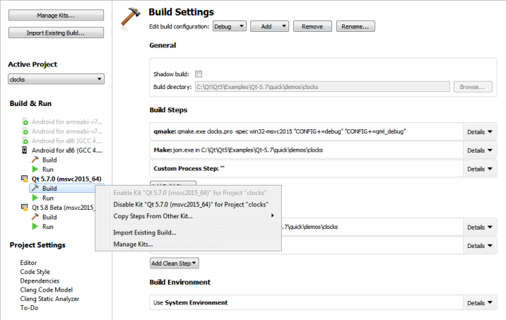

Configuring Projects
When you install Qt for a target platform, such as Android or QNX, the build and run settings for the development targets might be set up automatically in Qt Creator.
When you open a project for the first time, the Configure Projects view is displayed to let you select a set of kits that you want to use to build and run your project. At least one kit must be active for you to be able to build and run the project. For more information about selecting the initial kit, see Opening Projects.
To maintain the list of active kits for a currently open project, switch to the Projects mode by pressing Ctrl+5.
Activating Kits for a Project
All kits compatible with your project are listed in the Build & Run section of the sidebar. To activate one or more disabled kits, click them.

The list displays kits that are configured in Tools > Options > Kits. If the kit configuration is not suitable for the project type, warning and error icons are displayed. To view the warning and error messages, move the mouse pointer over the kit name.
To modify kit configuration or to add kits to the list, select Manage Kits. For more information about managing kits, see Adding Kits.
Each kit consists of a set of values that define one environment, such as a device, compiler, and Qt version. For more information, see Adding Qt Versions, Adding Compilers, and Adding Debuggers.
To copy the build and run settings for a kit to another kit, select Copy Steps from Other Kit in the context menu.
To deactivate a kit, select Disable Kit for Project in the context menu.
Note: Deactivating a kit removes all custom build and run settings for the kit.
To import an existing build for the project, select Import Existing Build.
Specifying Settings
To specify build or run settings for a kit, select Build or Run below the kit. For more information, see Specifying Build Settings and Specifying Run Settings.
In addition, you can modify the following global settings for each project:
- Editor
- Code Style
- Dependencies
- Clang Code Model
- Clang Tools
- To-Do (experimental)
If you have multiple projects open in Qt Creator, select the project to configure in the list of projects.